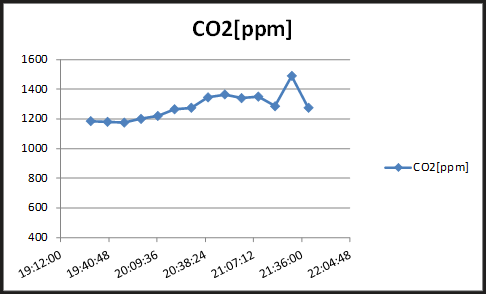
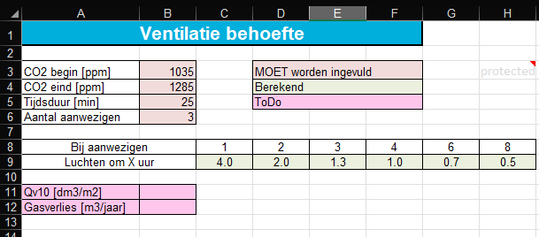
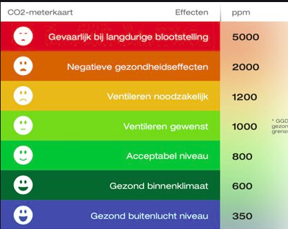

Op deze pagina kun de CO2 meting, opgenomen tijdens een EnergieCoach-gesprek gebruiken om te bepalen hoe goed de ventilatie is van de ruimte waar je he gesprek voert.
Teleurstellend resultaat in meer dan 70% van de woningen is de ventilatie onder de maat en dan
willen wij nog extra kierdichting gaan aanbrengen ook. Iets om over na te denken.
Het beste is om de CO2 eerst als grafiek weer te geven.

Vervolgens in de grafiek een lineair stuk te kiezen, hier bijvoorbeeld het derde t/m achtste punt.
Hier tijd en CO2 waarde op te zoeken en dit in te vullen in dit tabblad.
(helaas hoort het paaltje hierboven niet bij de hieronder ingevulde gegevens)
Je ziet dan dat bij de aanwezigheid van 4 personen, ieder uur gelucht moet worden.

Op het ToDo lijstje staat nog om Qv10 (luchtverversing en gasverbruik uit deze gegevens te berekenen.
Centrale afzuiging
De standaard centrale afzuiging met 3 standen is bedoeld om als volgt te gebruiken:
(tussen haakjes het bijbehorende gasverbruik)
- Stand 1 als je niet thuis bent (270 m3 gas/jaar)
- Stand 2 als je thuis bent (470 m3 gas/jaar)
- Stand 3 onder zware omstandigheden bijvoorbeeld als je (veel) bezoek hebt (700 m3 gas/jaar)
Bij een goed gebruik, staat gemiddeld de ventialtie 12 uur in stand-1 en 12 uur in stand-2 (350 m3 gas/jaar)
Decentrale Ventilatie
Om in bestaande woningen de ventilatie te verbeteren en weinig warmte te verliezen, zijn decentrale ventilatie-units met WarmteTerugWinnning (WTW) een goede oplossing
Neem er liefst een met CO2 sturing.
Overzicht van een aantal decentrale units
vantubo heeft een groot aantal typen
Gezonde CO2
Hoe laag moet de CO2 zijn ?
Onder de 1000 lijkt een goede waarde
(overigens slapen de meeste mensen het beste bij 1200 ppm CO2) |
 |
|
|
CO2 meters
Goede CO2 meters zijn niet goedkoop.
Een goede CO2 heeft 2 belangrijke eigenschappen
- heeft een goede = NDIR sensor
- Heeft GEEN automatische kalibratie